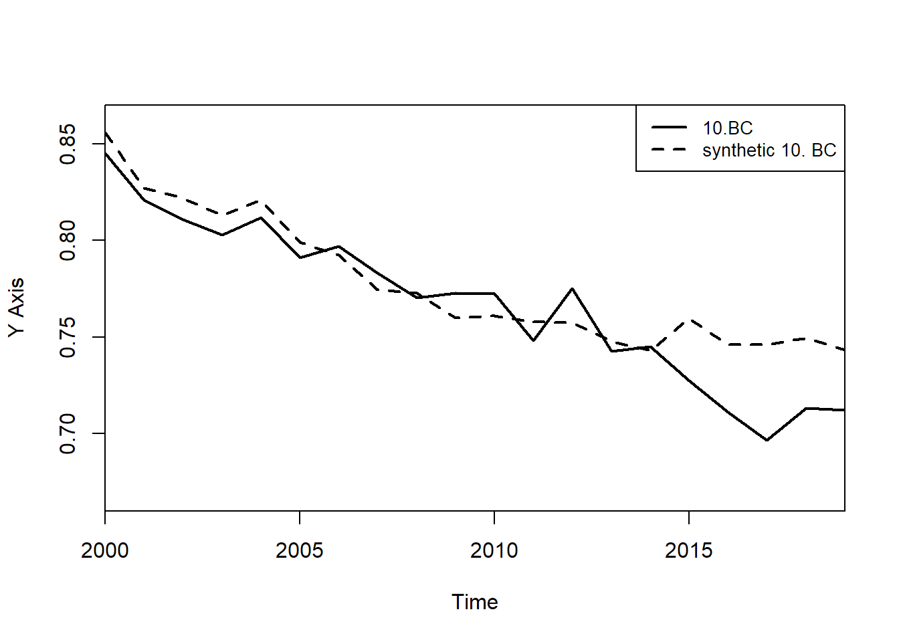
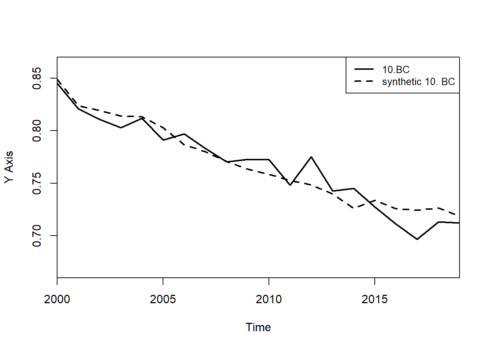

Code
df341<-read_dta('sectionC_task4_collapseddata.dta')
df34 <- df341 %>%
group_by(province, year) %>%
summarise(across(starts_with("edu"), ~mean(.x, na.rm = TRUE)),
formar = mean(formar, na.rm = TRUE),
cohab = mean(cohab, na.rm = TRUE))
df34$name <- ""
proname <- c("Newfoundland & Labrador", "Prince Edward Island", "Nova Scotia", "New Brunswick", "Quebec","Ontario","Manitoba"," Saskatchewan","Alberta" ,"British Columbia")
for (i in 1:10){
df34$name <- ifelse(df34$province == i, proname[i],df34$name)
}
df34 <- as.data.frame(df34)
df34$province <- as.numeric(df34$province)
# Prepare the data
t3synp1 <- dataprep(
foo = df34,
predictors = c("edu12", "edu13", "edu21", "edu22", "edu23", "edu31", "edu32", "edu33"),
predictors.op = "mean",
dependent = "formar",
unit.variable = "province",
time.variable = "year",
unit.names.variable = "name",
treatment.identifier = 10,
controls.identifier = c(1:9),
time.predictors.prior = c(2000:2012),
time.optimize.ssr = 2000:2013,
time.plot = 2000:2019
)
t3syn1 <- synth(t3synp1)
X1, X0, Z1, Z0 all come directly from dataprep object.
****************
searching for synthetic control unit
****************
****************
****************
MSPE (LOSS V): 9.723109e-05
solution.v:
6.1906e-06 0.01370176 3.0543e-06 0.04109318 0.3385545 0.298815 0.3066765 0.001149889
solution.w:
4.5251e-06 0.004146942 0.00410196 0.005293371 0.0009749935 0.2324437 0.04271549 0.003839381 0.7064796 Code
t3syng1 <- path.plot(dataprep.res = t3synp1,synth.res = t3syn1,Ylim = c(0.66,0.87), Legend = c("10.BC","synthetic 10. BC"))
Code
t3synp2 <- dataprep(
foo = df34,
predictors = c("cohab","edu12", "edu13", "edu21", "edu22", "edu23", "edu31", "edu32", "edu33"),
predictors.op = "mean",
special.predictors = list(
list("formar", 2009, "mean")),
dependent = "formar",
unit.variable = "province",
time.variable = "year",
unit.names.variable = "name",
treatment.identifier = 10,
controls.identifier = c(1:9),
time.predictors.prior = c(2000:2012),
time.optimize.ssr = 2000:2013,
time.plot = 2000:2019
)
t3syn2 <- synth(t3synp2)
X1, X0, Z1, Z0 all come directly from dataprep object.
****************
searching for synthetic control unit
****************
****************
****************
MSPE (LOSS V): 9.616666e-05
solution.v:
0.200451 0.03583939 0.04740207 0.08822844 0.01968502 0.1645045 0.1040342 0.1253762 0.1179669 0.09651227
solution.w:
6.826e-07 2.5922e-06 0.07121743 1.4201e-06 3.981e-06 0.4011764 3.69393e-05 3.9048e-06 0.5275567 Code
t3syng2 <- path.plot(dataprep.res = t3synp2,synth.res = t3syn2, Ylim = c(0.66,0.87), Legend = c("10.BC","synthetic 10. BC")) Code
t3synp3 <- dataprep(
foo = df34,
predictors = c("cohab", "edu12", "edu13", "edu21", "edu22", "edu23", "edu31", "edu32", "edu33"),
predictors.op = "mean",
special.predictors = list(
list("formar", 2007, "mean"),
list("formar", 2009, "mean"),
list("formar", 2011, "mean")),
dependent = "formar",
unit.variable = "province",
time.variable = "year",
unit.names.variable = "name",
treatment.identifier = 10,
controls.identifier = c(1:9),
time.predictors.prior = c(2000:2012),
time.optimize.ssr = 2000:2011,
time.plot = 2000:2019
)
t3syn3 <- synth(t3synp3)
X1, X0, Z1, Z0 all come directly from dataprep object.
****************
searching for synthetic control unit
****************
****************
****************
MSPE (LOSS V): 6.475819e-05
solution.v:
0.1823591 0.1522035 0.01560817 0.129904 0.02137578 0.06901198 0.06846723 0.06128481 0.09794489 0.06594726 0.06304812 0.07284508
solution.w:
7.232e-07 1.1139e-06 0.1728935 5.951e-07 1.5768e-06 0.5146288 3.97503e-05 1.4187e-06 0.3124325 Code
t3syng3 <- path.plot(dataprep.res = t3synp3,synth.res = t3syn3, Ylim = c(0.66,0.87), Legend = c("10.BC","synthetic 10. BC"))